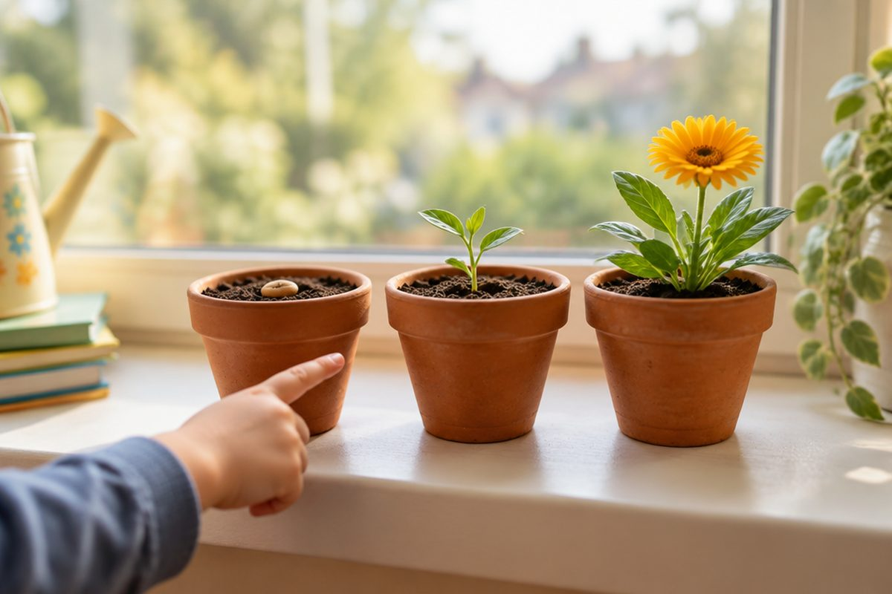

전체 단원 › 1학년 2학기 › 국어 › 3단계 · 이야기 순서 정리하기
이야기는 어떤 차례로 펼쳐질까?

이야기에는 처음, 가운데, 끝이 있어요. 차례를 알면 이야기가 쉬워져요.
처음, 가운데, 끝
이야기는 처음에 시작해요.
가운데에서 일이 생겨요.
끝에서 이야기가 마무리돼요.
씨앗을 심었어요. → 싹이 났어요. → 꽃이 피었어요.
차례를 알려 주는 말
'먼저', '그다음에', '마지막으로'를 써요.
이 말을 보면 차례를 알 수 있어요.
먼저 손을 씻어요. 그다음에 밥을 먹어요. 마지막으로 이를 닦아요.
시간을 알려 주는 말
'아침', '점심', '저녁'도 차례를 알려 줘요.
시간 차례대로 일이 일어나요.
아침에 일어나요. 점심을 먹어요. 저녁에 자요.
이야기 차례 정리하기
일이 일어난 차례대로 정리해요.
'토끼와 거북'으로 해 봐요.
경주를 해요. → 토끼가 낮잠을 자요. → 거북이 이겨요.
핵심 낱말
- 차례
- 먼저와 나중을 따라 늘어놓은 순서
- 처음·가운데·끝
- 이야기가 시작하고, 일이 생기고, 마무리되는 부분
- 차례를 나타내는 말
- 먼저, 그다음에, 마지막으로처럼 순서를 알려 주는 말
꼭 알아야 할 표현
| 처음 | 이야기가 시작하는 부분 | |
| 가운데 | 일이 생기는 부분 | |
| 끝 | 이야기가 마무리되는 부분 | [끋] |
| 먼저 | 가장 앞에 하는 일 | |
| 그다음에 | 먼저 한 일 바로 뒤에 | [그다으메] |
| 마지막으로 | 맨 끝에 | [마지마그로] |
| 아침에 | ☀️ 하루가 시작될 때 | [아치메] |
| 저녁에 | 🌙 해가 진 뒤 | [저녀게] |
| 먼저 손을 씻어요. | 🧼 차례를 알려 주는 문장 | [먼저 소늘 씨서요] |
| 토끼가 낮잠을 잤어요. | 🐇 이야기 가운데 부분 | [토끼가 낟짜믈 자써요] |
| 거북이 경주에서 이겼어요. | 🐢 이야기 끝부분 | [거부기 경주에서 이겨써요] |
한 줄 정리
- 이야기는 처음, 가운데, 끝으로 이어져요.
- '먼저, 그다음에, 마지막으로'는 차례를 알려 줘요.
- 일이 일어난 차례대로 정리하면 이야기를 잘 이해할 수 있어요.
학교 교육과정 연결
- [2국01-01] 중요한 내용이나 일이 일어난 순서를 고려하며 듣고 말한다.
- [2국02-03] 글을 읽고 중심 내용을 확인한다.